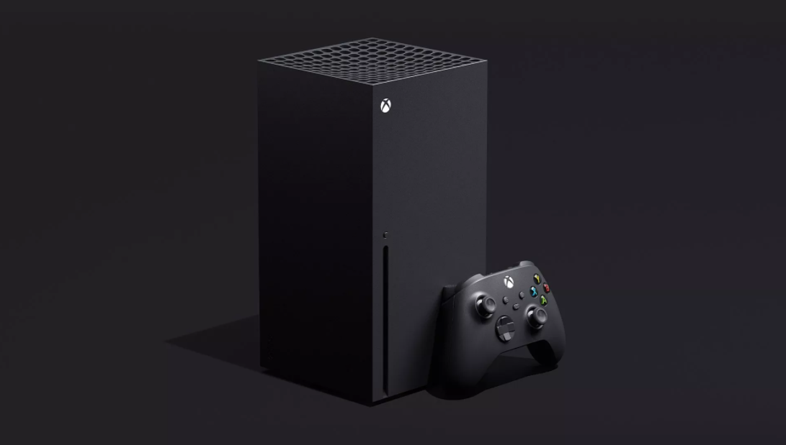

11.10.2020
Начало 2020-го выдалось напряженным. Зато конец года обещает быть полным ярких и приятных впечатлений. Ведь именно в это время должны выйти в продажу консоли нового, девятого поколения.
До последнего времени компания Microsoft неохотно делилась с публикой информацией по поводу своей последней разработки – консоли Xbox Series X. Только совсем недавно эмбарго было снято, и в широком доступе появились подробные характеристики устройства.
В этой статье мы расскажем все, что известно о Xbox Series X на сегодняшний день.
Первое, что бросается в глаза при виде Xbox Series X – необычный внешний вид приставки. Довольно крупногабаритное устройство в форме параллелепипеда сразу же вызвало в сети бурю обсуждений – некоторые даже сравнивали дизайн консоли с знаменитым обелиском из «Космической одиссеи» Стэнли Кубрика. Однако такой запоминающийся облик был выбран не только для красоты. Увеличение объёма корпуса позволило инженерам Microsoft встроить в Xbox Series X равномерную систему охлаждения. Три канала воздушного потока сбалансированно распределяют температуру, создаваемую внутренними компонентами консоли. Благодаря этому приставка не только не перегревается, но и работает практически бесшумно. К тому же ее можно устанавливать как вертикально, так и горизонтально.
При проектировании технической начинки консоли инженеры Microsoft поставили перед собой бескомпромиссную задачу: не только заметно улучшить качество картинки в сравнении с Xbox One (приставка должна была быть мощнее предшественницы минимум вдвое), но и сделать игру максимально комфортной, что означает постоянное разрешение 4K и 60 кадров в секунду. В соответствии с этими требованиями Microsoft и их партнеры из AMD разработали амбициозный и впечатляющий проект. Технические характеристики Xbox Series X выглядят так:
Процессор: специальный Zen 2, 8 ядер, тактовая частота 3,8 ГГц
Графический процессор: на базе AMD RDNA 2, 12 терафлопс
Оперативная память: 16 Гб, формат GDDR6
Пропускная способность: 10 Гб на скорости 560 Гб/с, оставшиеся 6 Гб – 336 Гб/с
Жесткий диск: SSD на 1 Тб
Пропускная способность ввода/вывода: 2,4 Гб/с или 4,8 Гб/c (со сжатием через встроенный блок декомпрессии).
Оптический привод: 4k UHD Blu-Ray
Что эти данные означают для пользователей Xbox Series X? Все очень просто. Девайс девятого поколения – самая мощная консоль Microsoft, и, возможно, самая мощная консоль в истории, способная соперничать в мощности с топовыми игровыми ПК.
Благодаря этому Xbox Series X может похвастаться целым рядом передовых графических технологий. Одной из них является аппаратная поддержка трассировки лучей DirectX Raytracing. Новинка позволит в реальном времени максимально точно симулировать преломление и распространение звука и света. В этом можно убедиться воочию: Microsoft продемонстрировали технологию на примере Minecraft. Даже в этой визуально аскетичной игре-песочнице возможности трассировки лучей поражают воображение: правдоподобные отсветы от огня камина на полу и стенах комнаты или свет луны, проникающий через толщу воды, предают картинке небывалое ощущение реализма.
Другие графические возможности Xbox Series X – повышенная плотность частиц, высочайшее разрешение текстур, контактные тени и многое другое – были показаны на примере версии Gears 5 для новой консоли. Помимо графических улучшений, обновленная игра работает с постоянной частотой кадров в 100 FPS. Microsoftзаверяют: хотя официальный стандарт Xbox Series X – 60 кадров в секунду, игры на консоли легко можно оптимизировать для работы в 100 или 120 FPS, что наверняка станет нормой для сетевых соревновательных проектов. Еще одна приятная деталь: создатели Gears 5 рассказали о том, что Xbox Series X – очень дружелюбная платформа по отношению к разработчикам: для того, чтобы сделать улучшенную версию игры для новой платформы, понадобилось всего две недели.
Парадоксальным образом зачастую выход новых консолей – время ажиотажа и простоя. На новое устройство поначалу выходит довольно мало игр, поэтому игроки, попробовав новые эксклюзивы, в первые пару лет жизненного цикла приставки в основном пользуются консолью прошлого поколения с большой библиотекой.
Microsoft намерены решить эту проблему. Xbox Series X обладает мощными возможностями обратной совместимости – консоль поддерживает не только большинство игр с Xbox One, но и многие проекты с Xbox 360 и даже с оригинального Xbox (для этого используется инновационный алгоритм машинного обучения). Таким образом Microsoft не только автоматически расширяют библиотеку новой консоли до нескольких тысяч наименований, но и дают возможность сыграть в любимые хиты в совершенно новом качестве: с моментальными загрузками, стабильной кадровой частотой и высоким разрешением экрана и текстур.
На этом предложения обратной совместимости не заканчиваются. Специальная система Smart Delivery позволяет использовать одну копию игры на всех платформах – так, обладатели Gears 5 на Xbox One получат улучшенную версию для Xbox Series Xсовершенно бесплатно. Связь между Xbox Series X и предыдущим поколением самая крепкая: обладатели Series X могут играть в сетевые игры вместе с игроками на XboxOne, и все аксессуары Xbox One будут работать с Xbox Series X.
На сегодняшний день Xbox Series X – достойный претендент на звание не только самой мощной, но и самой демократичной консоли девятого поколения. Красивая графика, высочайшая производительность и огромное количество функций для увеличения комфорта игрока – вот главные аргументы в пользу новинки Microsoft.
Выход консоли намечен на конец 2020-го года. Точная дата старта продаж пока не уточняется, но как и всегда купить Microsoft XBOX Series X в Игрорай получится раньше чем где либо и дешевле!